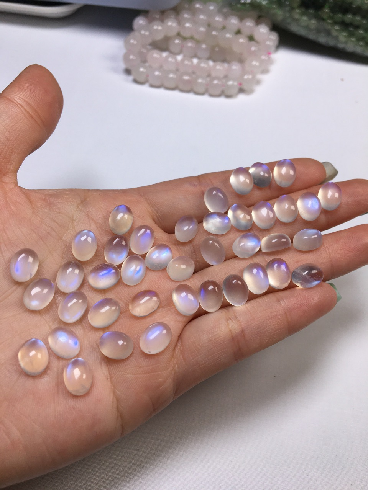

THE STONE OF NEW BEGINNINGS
白月光石 White Moonstone
「溫柔的情緒調節者，如同月光般撫平心靈的波動」
✦ 對應：眉心輪、頂輪
✦ 五行：水
✦ 化學式：(Na,K)AlSi₃O₈
✦ 硬度：6.0 - 6.5 (莫氏)
科學背景與青白光彩
白月光石屬於長石家族，其迷人的視覺效果源於冰長石暈彩 (Adularescence)。這是由層狀結構交織形成的特殊現象，當光線進入晶體，會在交界面產生散射，形成如同月亮般幽幽閃爍的青白光芒。在能量學中，這種溫和的反射光被視為引導內在直覺與覺知的導引之光。
常見形態與用途

蛋面琢磨 Cabochon
月光石最常見的打磨方式。透過圓潤的表面能最大化展現內部的青白暈彩，適合製作成戒指或墜飾，貼近皮膚以穩定佩戴者的荷爾蒙與情緒頻率。

天然原礦 Raw Stone
保留晶體的原始片狀結構。原礦適合放在床頭或冥想空間，能幫助釋放壓力、改善睡眠品質，並強化女性特質與慈悲心的能量流動。
能量聯動組合
深度蛻變

＋ 拉長石
同屬長石家族，月光石安撫情緒，拉長石保護氣場。兩者結合能協助您在人生轉折點平穩前行。
純淨冥想

＋ 透石膏
透石膏的高頻率能放大月光石的直覺力。適合深度睡眠或靈魂修復時使用，帶來極致的寧靜感。
流暢溝通

＋ 海藍寶
月光石穩定內在情感，海藍寶提升外在表達。幫助佩戴者能以更溫柔、清晰的方式傳遞真心話。
專業保養與注意事項
- 脆弱特性：月光石具備明顯的「解理」，受強力撞擊或掉落時極易沿裂面破碎，佩戴時請務必避免劇烈運動或勞動。
- 淨化方式：由於對應月亮能量，最推薦在「月圓之夜」將其放置在窗台接受月光洗禮，這能有效充盈其溫潤的能量。
- 辨識真偽：天然月光石的暈彩隨角度轉動會呈現流動感且伴隨天然冰裂；若光彩死板且完全透明無瑕，需留意是否為合成玻璃製品。